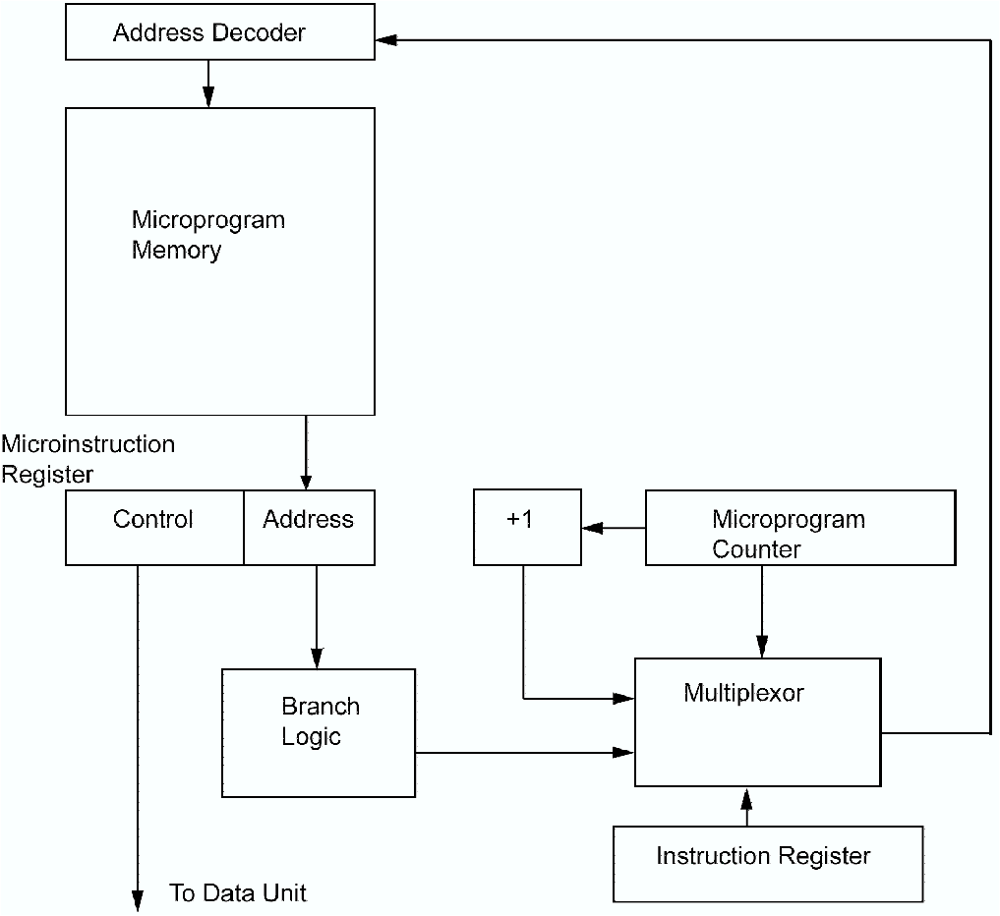
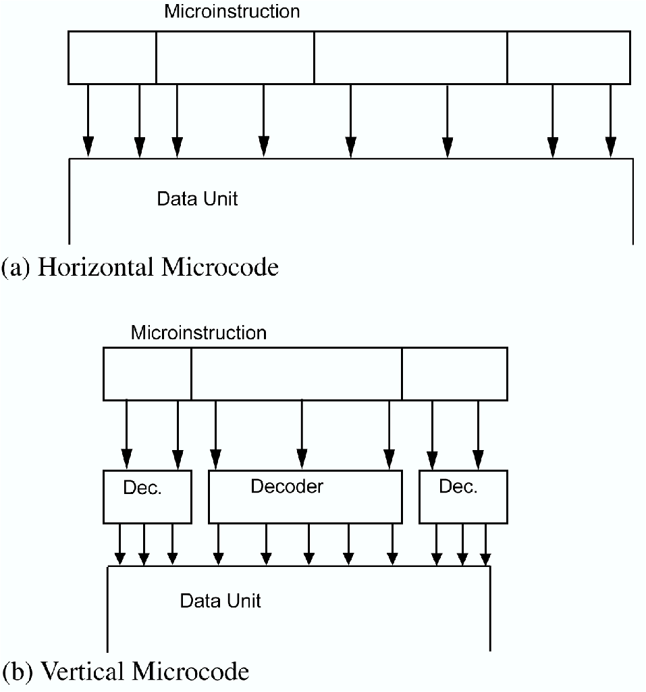
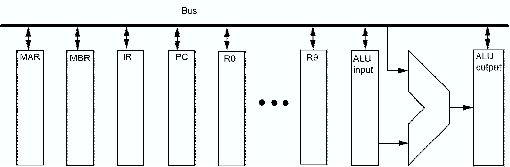

We will start this module with a quick look back at some earlier implementation techniques. This is partly to set the scene, and partly to explain the background of some later developments (which were initially controversial).
The control parts of computers prior to the mid 60s were constructed, essentially, of electronic components structured into logic gates. It was quickly discovered that building computers, especially the control logic, was complex and error-prone — hence techniques were developed to further structure systems and reduce errors. Nevertheless, it was still difficult and complex, and errors were hard to fix.
In 1957 Maurice Wilkes1 proposed an alternative called `microprogramming'. At the time, it was highly impractical, but in 1964 IBM launched its 360 range, most of which used this microprogramming concept. Only the top of the range machine was not microprogrammed, because microprogramming could not deliver the required performance (traditional methods, for all their faults, were fast). The 360 series were highly significant machines in the 60s, and their influence on machine architicture design is still visible today, particularly in Intel 80x86 and Motorola 680x0 processors, whose instruction sets are essentially evolutions of the 360 original. In fact, IBM still produces mainframes today that use the same architecture.
Wilkes' idea was that each machine instruction was divided into a number of sub-instructions, or microinstructions. While a real instruction (we might say macroinstruction) might be something like `add the contents of registers A and B', a microinstruction might be something like `write out register A to bus Z', or `read data bus into register X' — very basic actions that could be assembled to implement the actual instruction set of the machine. The set of microinstructions that made up a full instruction set was called the microprogram, or microcode.
The precise details of Wilkes' design are not important to us, but we note the following:
The idea is that each microinstruction will be divided up into two parts — the control part, which controls the operation of the datapath (or data unit), and the address part, which is the address of the next microinstruction to be executed under certain conditions.

Figure 1.1: A microprogrammed controller
Consider figure 1.1. After executing a particular microinstruction, the next microinstruction to be executed is either that specified by the address field of the current microinstruction, or the next sequential microinstruction (as in a conventional machine language) depending on the value of the conditional inputs. In addition, when one sequence of microinstructions has finished, the next is determined by the contents of the machine instruction register.
In fact, the situation is usually slightly more complex than this — there is usually a sequencing part to the microinstruction in addition to the control and address parts. The sequencing information is used, for example, to decide which of several conditional inputs is to be used to control branching. Usually we require unconditional branching as well, and also many microinstructions do not require branching at all.
Consequently the situation is slightly more complex than that shown in figure 1.1.
Further refinements are possible — for example, some systems allow two addresses in the microinstruction, and use conditions to select between them, rather than selecting between one address and the next sequential address. Such systems are called two-address microinstruction controllers, or sequencers. Conversely, the type shown in figure 1.1 is a single-address controller. It is also common to find subroutines, usually somewhat rudimentary.
The format of the control part of a microinstruction allows us to classify microinstructions into horizontal and vertical. The datapath is controlled by a number of control signals, supplied by the controller. The question is, how do we map the required control signals onto the control word?

Figure 1.2: Horizontal & vertical microcontrollers
The simplest solution would be to assign each control signal a single bit in the control word — see figure 1.2(a).
This is fully-horizontal microcode. It has the obvious disadvantage that not all control signals in the datapath will ever be activated simultaneously, thus requiring much wider microcode words than is necessary. Microcode words are commonly wide anyway — of the order of 100 bits or more. If a datapath has many control signals, it could be very much wider with horizontal microcode.
However, it does have the advantages that many datapath signals can be activated simultaneously, thus maximising potential parallelism; and there is no extra hardware between controller and datapath, which could slow down the processor. Therefore, horizontal microcode is potentially fast.
In fully-vertical microcode, the control signals are fully-encoded in the control word — that is, if for example a datapath had 16 control signals, these would be encoded as four bits: see figure 1.2(b).
This saves on the microcode memory needed, but removes any possibility for parallelism and adds a decoder between the controller and the datapath.
As well as delaying the signals, the decoder will consume some of the space/resources saved by reducing the size of the microcode memory. This is an example of a time-space tradeoff.
In practice, neither extreme is seen — some degree of encoding of the datapath signals is always done, and some parallel operation is allowed.
In practice, not all possible parallel activities are useful; e.g. there is no point in writing more than one register to the same bus (i.e. performing more than one register read) at the same time.
Therefore, it makes sense to work out what useful combinations of parallel actions exist and allow these.
How can we design a microinstruction format to control the data unit? Each register needs two control signals to indicate reading and writing from/to the bus.

Figure 1.3: A simple bus-based data unit
For example consider a simple, single bus implementation of a data unit in figure 1.3.
There are a total of 16 registers, but only one can write to the bus at any one time — hence it makes sense to encode all the register read bits as a 4-bit word.
However, all the registers can read from the bus (register write) simultaneously — so we could argue that these should be unencoded — 16 bits.
However, this is a bit over the top, as we would hardly want to write the same value into all the registers at once.
We would look at the architecture, and see if the instruction set makes it reasonable to allow multiple register writes. Given the single bus implementation, in most cases we are unlikely to gain anything by allowing this. Hence in this case it makes sense to encode the read bits as well. This would allow us to simultaneously read and write to the bus, copying the contents of one register in a single step.
Microprogramming has been a massively successful solution to the problem of building controllers systematically, and was used (with minor modifications) in the vast majority of processors from the mid 1960s to the late 1980s.
However, it has now been more-or-less completely superseded for advanced processors. The reasons for the initial success and then the decline are partly technological and partly concerned with attitudes to software and hardware. While initially intended as a more managable means of building controllers, a number of other `advantages' become clear.
All through the 60s and 70s instruction sets became more and more sophisticated, culminating arguably in DEC's VAX series. Designers thought that by providing a rich, sophisticated instruction set they were making life easier for software engineers (particularly compiler writers). During the late 60s the software crisis — the failure of software projects to deliver — was a major issue, and the reasons behind it were not initially well understood. (Software projects still often do not deliver, but at least the community knows why even if those directly involved do not.) One thing that was clear however was that it was not possible to keep on writing low-level code and meet demand — widespread use of high-level languages was necessary and (many) compilers were not all that good. Designers of instruction sets thought they were being helpful by trying to bridge the so-called semantic gap between low- and high-level languages. They did this by trying to provide relatively `high-level' instruction sets.
However, starting in the early 80s, doubts crept in:
There were always people with doubts about the appropriateness of high-level instruction sets, but by the early 80s the influence of those who thought complex instruction sets were bad was growing. Their general view was that high-level instruction sets were providing solutions when they should have been providing tools or primitives. That is, they were saying to compiler writers: “You have this problem to do with generating code, and we've solved it for you with this instruction.” This led to the problems listed above. Instead of solutions, the doubters said, they should have been concentrating on basic building-blocks (tools) that compiler writes could use to build their own solutions, more closely matched to their specific problems.
A review of the actual behaviour of programs, the needs of compiler writers, and improvements in compiler technology all helped to boost the RISC movement (chapter 2). This was further promoted by the growing use of pipelining (chapter 4) and superscalar implementations (chapter 7) which, as we shall see, are much better suited to conceptually simpler instruction sets — where all the instructions are the same length and take the same amount of time to execute. Furthermore, the very nature of modern pipelined processors is that they consist of multiple, parallel stages, each with its own relatively-independent and simple control logic — which are not well-suited to microprogramming.
We will look at the issues surrounding the rise of RISCs in the next chapter.